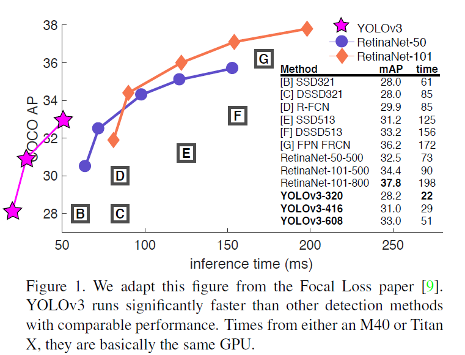
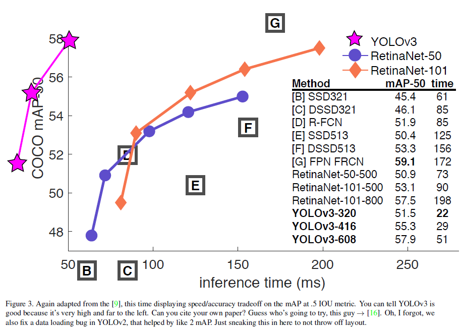
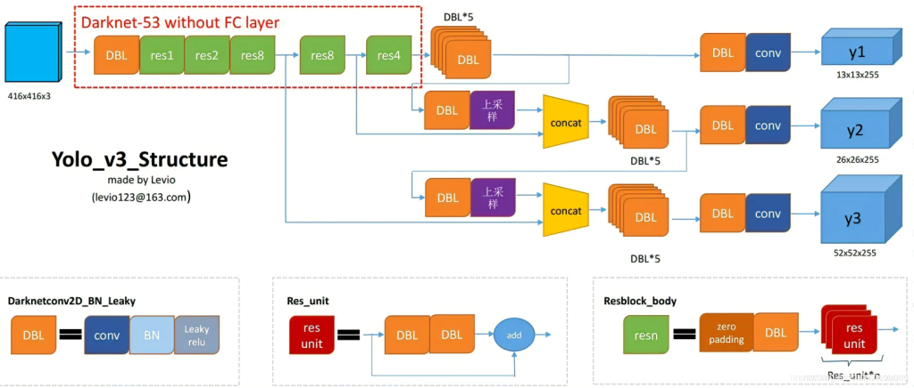
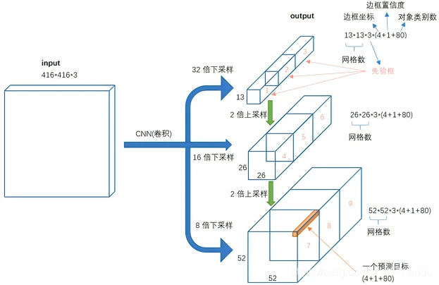

YOLOv3笔记
学习内容来源：同济子豪兄的个人空间_哔哩哔哩_bilibili

响应时间图
响应时间图2骨干网络
Darknet-53

网络结构【目标检测】YOLOV3详解_Aliert的博客-CSDN博客
结构13*13的anchor负责预测大物体；
26*26的anchor负责预测中物体；
52*52的anchor负责预测小物体；
本博客所有文章除特别声明外，均采用 CC BY-NC-SA 4.0 许可协议。转载请注明来自 HUII's Blog！